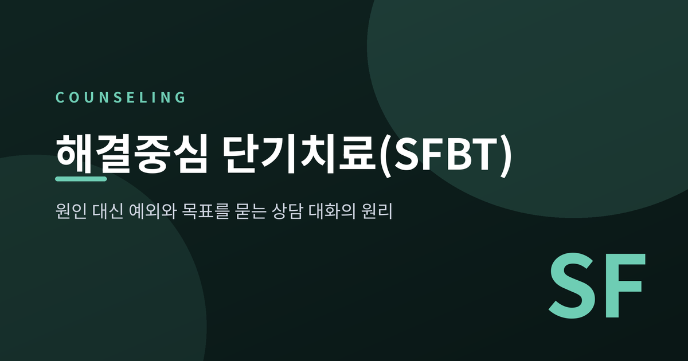
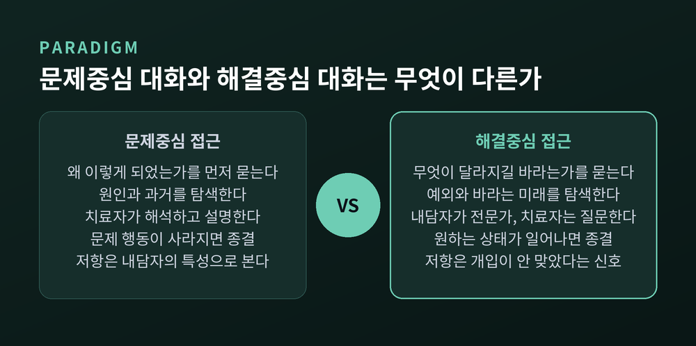
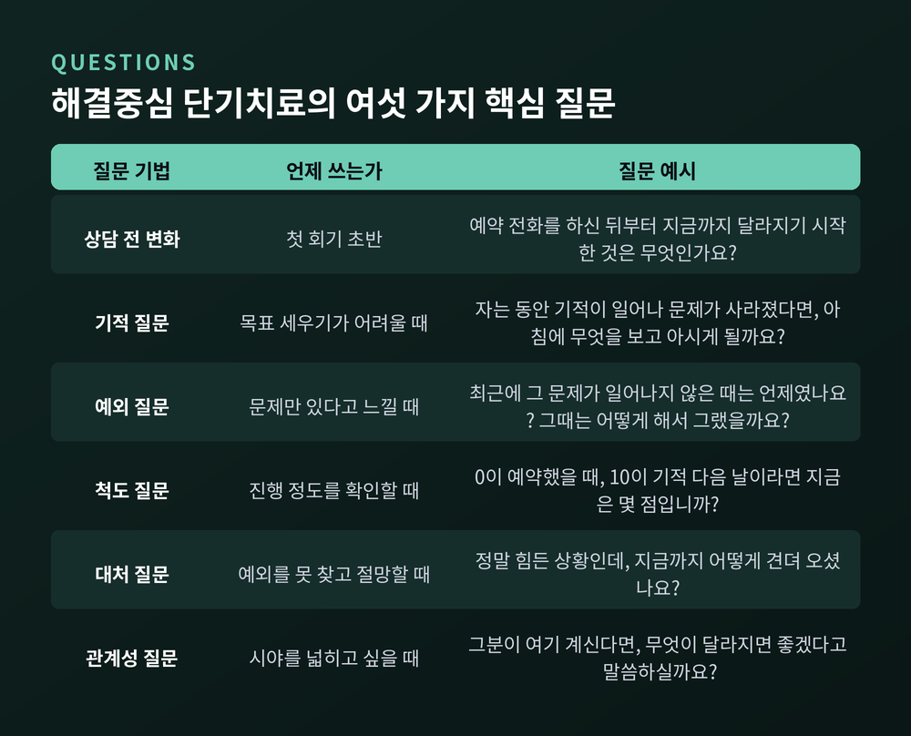
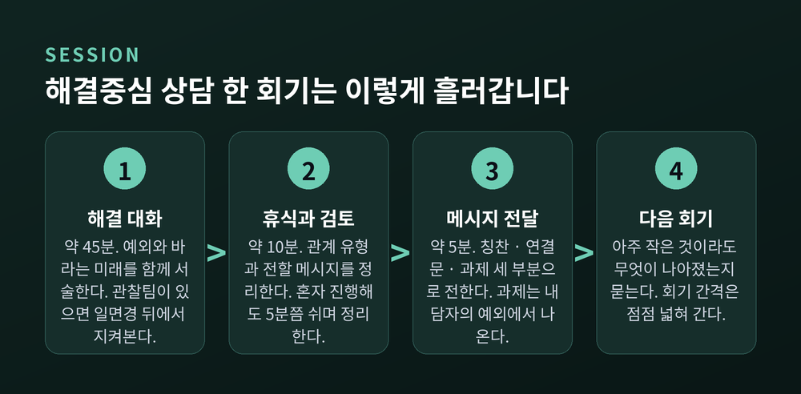
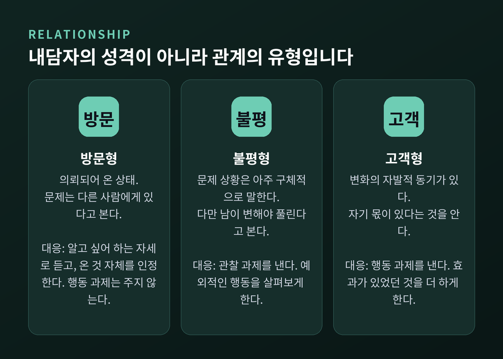
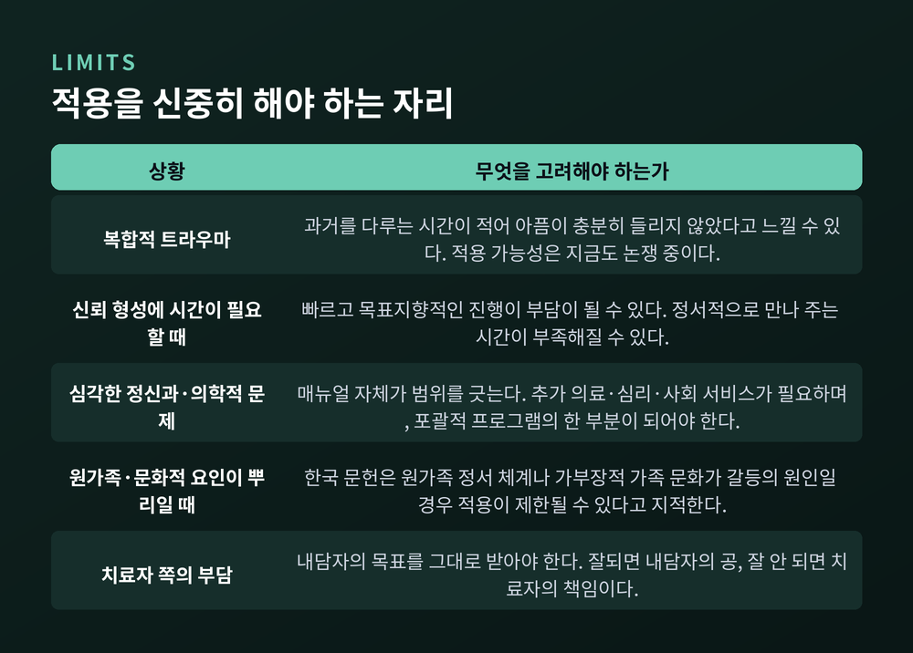

이번 글에서는 해결중심 단기치료(SFBT)를 정리해 보겠습니다. "왜 이렇게 됐을까"를 캐묻지 않고 "무엇이 달라지길 바라는가"를 묻는 상담이 어떻게 성립하는지, 어떤 질문을 쓰고 어디까지 효과가 확인되었으며 어떤 자리에서는 맞지 않는지를 함께 살펴보려 합니다.
해결중심 단기치료는 1970년대 후반 미국 위스콘신주 밀워키에서 시작되었습니다.
스티브 드 셰이저와 김인수 부부, 그리고 동료들이 세운 단기가족치료센터(BFTC)가 그 자리입니다. 두 사람은 1977년 학회에서 만나 함께 일하기 시작했고, 이듬해 독립해 자기들 거실에서 센터를 열었습니다.
이들의 목표는 특이했습니다. 어떤 이론에서 출발해 치료를 설계하는 대신, 무엇이 실제로 효과가 있는지를 거꾸로 찾아내는 것이었습니다.
방법은 더 특이했습니다. 전통적인 치료 요소를 하나씩 빼 보고 내담자의 결과가 나빠지는지를 관찰했습니다.
그 과정에서 이들은 하나의 결론에 도달합니다. 문제를 분석하고 진단하는 작업을 대화에서 덜어내도, 내담자의 결과는 나빠지지 않았습니다.
1978년부터 1985년까지 약 8년 사이에 오늘날 해결중심 접근이라 부르는 것의 뼈대가 만들어졌습니다.
기법들이 만들어진 과정도 인상적입니다. 척도 질문은 한 내담자가 두 번째 회기에서 "저 벌써 거의 10점까지 왔어요"라고 말한 데서 나왔습니다. 기적 질문 역시 "제 문제는 너무 심각해서 해결되려면 기적이 일어나야 해요"라던 내담자의 한마디를 치료자가 그대로 따라간 결과였습니다.
이론이 기법을 낳은 것이 아니라, 내담자의 말이 기법을 낳았습니다.
해결중심 단기치료의 가장 급진적인 전제는 여기에 있습니다.
문제의 원인을 안다고 해서 해결책이 따라 나오지 않고, 해결책을 안다고 해서 원인이 밝혀지는 것도 아니라는 것입니다. 둘은 서로를 함축하지만, 한쪽에서 다른 쪽을 연역할 수 없습니다.
예전의 상담은 원인을 충분히 파헤쳐야 증상이 풀린다고 보았습니다. 지금 이 모델은 원인 탐색을 건너뛰고도 변화가 일어난다고 봅니다.
동시에 문제와 해결은 서로를 배제합니다. 밤과 낮처럼, 둘 중 하나만 있을 수 있습니다. 기적 질문이 기대는 지점이 바로 이 구분입니다.

또 하나 눈여겨볼 구분이 있습니다. 이 모델은 해결 가능성이 있는 것만 '문제'라고 부릅니다. 사별, 영구적인 신체 손상, 되돌릴 수 없는 상실은 치료가 해결할 수 있는 대상이 아닙니다. 이런 경우 목표는 '해결'이 아니라 '감당하며 살아가는 방식을 찾는 것'으로 바뀝니다.
밑바탕에는 사회구성주의적 관점이 깔려 있습니다. 현실은 사람들이 그것을 어떻게 지각하고 이야기하느냐에 따라 다르게 존재한다는 것입니다.
그래서 치료자는 해석하지 않고, 직면시키지 않으며, 지시하지 않습니다. 대신 듣고, 내담자의 단어를 흡수하고, 그 단어에 연결해 다음 질문을 만듭니다. 이 순환 속에서 새로운 의미가 함께 만들어집니다. 이것을 공동 구성이라 부릅니다.
이 모델의 세 가지 중심 철학은 이렇게 요약됩니다.
저항이라는 개념도 이 모델에는 없습니다. 드 셰이저는 1984년 「저항의 죽음」이라는 논문에서 이를 못 박았습니다. 그 논문은 학술지에서 열일곱 번 거절당한 뒤에야 실렸습니다.

첫째, 상담 전 변화 질문입니다. 첫 회기 초반에 이렇게 묻습니다. "예약 전화를 하신 뒤부터 오늘 여기 오기까지, 달라지기 시작한 것은 무엇인가요?" 한 연구에서는 사례의 약 3분의 2에서 첫 면담 이전에 이미 상황이 나아지기 시작한 것으로 나타났습니다.
둘째, 기적 질문입니다. 표준 문안은 상당히 깁니다. 오늘 돌아가서 하루를 마치고, 집이 조용해지고, 평화롭게 잠이 든 사이에 기적이 일어나 문제가 사라졌다고 가정합니다. 그리고 이렇게 묻습니다. "내일 아침 눈을 떴을 때, 어떤 작은 변화를 보면 '뭔가 일어났구나'라고 아시게 될까요?"
이것은 세 가지 소원을 묻는 질문이 아닙니다. '문제가 해결되었다는 것을 무엇을 보고 알 것인가', 즉 판별 기준을 묻는 질문입니다.
셋째, 예외 질문입니다. 예외란 문제가 일어날 수 있었는데 일어나지 않은 때를 말합니다.
일반화한 가상의 예시를 들어 보겠습니다. 어머니가 말합니다. "얘는 학교에서 오면 무조건 방으로 들어가요." 그러자 상담자가 되묻습니다. "'예전엔' 그러지 않았다는 건, 언제였을까요?"
그 한마디에서 지난주 어느 저녁이 떠오릅니다. 아이가 학교에서 있었던 일로 들떠서 먼저 말을 걸었던 날. 상담자는 그 장면을 자세히 복원합니다. 무슨 요일이었는지, 어머니는 무엇을 하고 계셨는지.
그리고 묻습니다. "그때는 무엇이 달라서 서로 이야기하기가 쉬웠을까요?" 어머니가 답합니다. "얘가 신나 있었죠." 아이가 덧붙입니다. "엄마가 다른 일 안 하고 들어줬어요."
마지막으로 상담자는 그 예외를 목표에 잇습니다. "이런 일이 더 자주 일어난다면, 두 분이 말씀하시는 '더 나은 대화'가 되는 건가요?"
넷째, 척도 질문입니다. "0이 상담을 예약했을 때고 10이 기적이 일어난 다음 날이라면, 지금은 몇 점입니까?"
이 질문에는 세 가지 기능이 있습니다. 매 회기 진행 정도를 재는 평가 도구이고, 평가의 주체가 치료자가 아니라 내담자임을 구조적으로 드러내며, 그 자체로 강력한 개입입니다.
후속 질문이 더 중요합니다. "5점에서 6점으로 올라가려면 무엇이 필요할까요?" "4점이 5점이 되면 무엇이 달라져 있을까요?"
점수가 그대로일 때는 이렇게 묻습니다. "어떻게 내려가지 않게 붙잡고 계셨나요?"
다섯째, 대처 질문입니다. 예외를 찾기 어렵거나 절망을 호소하는 분에게 씁니다. "정말 힘든 상황인데, 지금까지 어떻게 견뎌 오셨나요?"
막연한 위로를 건네는 대신, 작은 것이라도 스스로 대처하며 버텨 왔다는 사실을 본인이 발견하게 하는 질문입니다.
여섯째, 관계성 질문입니다. 중요한 타인의 시선을 빌려 옵니다. "지금 아이 아버지가 여기 앉아 계신다면, 제가 '아이 문제가 해결되면 무엇이 달라지겠느냐'고 물었을 때 뭐라고 하실까요?"
자기 관점만이 아니라 자신을 보는 다른 사람의 관점까지 시야에 들어오면서, 쓸 수 있는 자원이 늘어납니다.
목표를 세우는 방식에도 원칙이 있습니다. 문제의 부재가 아니라 해결의 현존으로 진술합니다. "아이가 욕을 안 했으면 좋겠다"가 아니라 "아이가 우리에게 더 다정하게 말했으면 좋겠다"입니다. 후자여야 척도로 잴 수 있습니다.

전체는 대략 60분입니다.
앞의 45분 남짓 동안 대화가 진행됩니다. 관찰팀이 있는 기관에서는 일면경 뒤에서 회기를 지켜봅니다.
그다음 10분 정도, 상담자는 관찰팀과 회기를 검토합니다. 관계 유형은 무엇이었는지, 어떤 메시지를 전할지를 의논합니다. 혼자 진행하는 경우에도 5분쯤 쉬면서 정리합니다.
마지막 5분에 메시지를 전합니다. 이 메시지는 세 부분으로 이루어집니다.
칭찬은 추상적인 격려가 아닙니다. 회기 중에 실제로 드러난 성공과 강점을 짚습니다. 동시에 문제가 얼마나 힘든지를 인정합니다. 잘 듣고 있었고, 신경 쓰고 있다는 신호이기도 합니다.
연결문은 확인한 강점을 다음 과제와 논리적으로 잇습니다.
과제는 반드시 내담자가 이미 하고 있는 것에서 나옵니다. 치료 매뉴얼은 이 원칙을 분명히 합니다. 내담자의 이전 해결책이나 예외에 근거하지 않은 과제를 내는 일은 드뭅니다. 가장 좋은 것은 내담자가 스스로 과제를 정하는 것입니다.
흥미로운 점은 여기입니다. 과제를 해 오지 않아도 그것을 다루지 않습니다. 안 해 온 이유는 현실적 사정이거나, 유용하지 않다고 느꼈거나, 그 기간에 별로 관련이 없었기 때문입니다. 어느 쪽이든 책임을 묻지 않습니다.
두 번째 회기부터는 같은 질문으로 시작합니다. "지난번 이후, 아주 작은 것이라도 무엇이 나아졌나요?"
회기 간격은 고정하지 않습니다. 변화가 자리를 잡을수록 간격을 늘립니다.

드 셰이저는 1988년 저서에서 세 가지 유형을 구분했습니다. 한 가지 오해를 먼저 걷어낼 필요가 있습니다. 이것은 내담자의 성격 유형이 아니라 상담자와 내담자 사이의 관계 유형입니다.
방문형은 고민은 있으나 변화에 대한 기대가 적은 상태입니다. 부모나 배우자, 학교나 법원에 의해 의뢰되어 온 경우가 많습니다. 문제는 다른 사람에게 있다고 봅니다. 이때 상담자는 알고 싶어 하는 자세로 내담자를 자기 삶의 전문가 자리에 세웁니다. 온 것 자체를 인정하고, 행동 과제는 주지 않습니다.
불평형은 문제 상황을 아주 구체적으로 잘 말합니다. 다만 다른 사람이 변해야 해결된다고 보고, 자신이 할 일은 생각하지 않습니다. 이때는 관찰 과제를 냅니다. 다른 사람의 예외적인 행동을 살펴보게 하는 식입니다.
고객형은 변화에 대한 자발적 동기가 있고, 자기 몫이 있다는 것을 압니다. 이때 비로소 행동 과제가 나갑니다.
유형은 고정되지 않습니다. 대화가 진행되면서 방문형이 고객형으로 옮겨 가기도 합니다. 부모와 자녀가 함께 온 자리에서 한 사람은 방문형이고 다른 사람은 불평형일 수도 있습니다.
2024년 『임상심리학 리뷰』에 실린 메타분석은 심리사회적 문제 전반에 대한 효과크기를 g = 1.17로 보고했습니다. 통상 큰 효과로 분류되는 값입니다. 다만 같은 분석에서 비임상 표본(g = 1.50)이 임상 표본(g = 0.78)보다 효과가 컸다는 점은 함께 읽어야 합니다.
같은 해 『심리치료 연구』에 실린 우산 리뷰는 여러 체계적 문헌고찰과 메타분석을 다시 종합했습니다. 연령대와 문화권을 막론하고 다양한 성과에서 효과가 확인되었습니다.
평균 회기 수는 대략 네 번 안팎으로 알려져 있습니다. 짧습니다.
한국에서는 1987년 드 셰이저와 김인수가 직접 워크숍을 진행하면서 처음 소개되었고, 1996년 한국지부 설립을 계기로 빠르게 퍼졌습니다. 최근 조사에서는 가족상담자들이 교육받은 모델과 실제로 적용하는 모델 순위 모두에서 이 모델이 1순위로 나타났습니다.

균형을 위해 한계도 분명히 적어 둡니다.
가장 정직한 목록은 이 접근을 가르치는 사람들 자신에게서 나옵니다. 런던의 한 해결중심 실천 센터는 이 모델의 '단점'을 이렇게 정리했습니다.
치료자는 내담자의 말을 그대로 진지하게 받아야 합니다. "사실은 다른 뜻일 것"이라는 자리에 설 수 없습니다. 그래서 자신이 옳지 않다고 느끼는 목표라도 받아들여야 합니다.
이 대목이 가장 어렵습니다. 내담자가 "지금은 배우자와의 관계를 개선하고 싶다"고 말하면, 치료자는 '이 사람은 다른 문제를 먼저 다뤄야 한다'는 자기 판단을 내려놓아야 합니다. 근본 원인을 중시하는 훈련을 받은 치료자에게 이 전환은 쉽지 않고, "내 작업이 피상적인 것 아닌가"라는 불안이 따라옵니다.
내담자가 끝났다고 하면 끝난 것입니다. 치료자는 공을 가져갈 수도 없습니다. 잘되면 내담자의 공이고, 잘 안 되면 치료자의 책임입니다.
밖에서 오는 비판도 있습니다.
과거와 고통을 다루는 시간이 적어서, 어떤 분은 자기 아픔이 충분히 들리지 않았다고 느낄 수 있습니다. 빠르고 목표지향적인 진행 탓에 정서적으로 만나 주는 시간이 부족하다는 지적도 있습니다. 심각한 어려움을 겪고 있거나 신뢰를 쌓는 데 시간이 더 필요한 분에게는 짧은 형식이 맞지 않습니다.
한국 문헌에서는 원가족의 정서 체계나 가부장적 가족 문화가 갈등의 뿌리로 작용하는 경우 이 모델의 적용이 제한될 수 있다고 지적합니다.
치료 매뉴얼 자체도 범위를 그어 둡니다. 심각한 정신과적·의학적 문제나 불안정한 생활 여건에 놓인 분에게는 추가적인 의료·심리·사회 서비스가 필요하며, 이때 해결중심 접근은 포괄적 치료 프로그램의 한 부분이 되어야 한다는 것입니다.
트라우마 적용을 두고는 지금도 논쟁이 진행 중입니다. 복합적인 트라우마 이력을 가진 분에게는 신중해야 한다는 입장과, 트라우마를 겪은 분들에게도 효과가 있다는 실천 현장의 보고가 함께 있습니다. 어느 한쪽으로 정리되었다고 말하기는 이릅니다.
한 가지 오해도 풀어 둡니다. 이 모델이 다른 치료와 대립한다는 생각은 사실이 아닙니다. "효과가 있으면 더 하라"는 원칙상, 복용 중인 약을 유지하고 자조 모임에 계속 나가고 다른 상담을 병행하는 것을 오히려 권합니다.
정리하면 이렇습니다.
해결중심 단기치료는 "왜"를 묻지 않기로 한 대신, "무엇이 이미 조금 되고 있는가"를 집요하게 묻는 방식입니다. 원인을 밝히는 즐거움도, 통찰을 선물하는 보람도 치료자에게 남지 않습니다. 남는 것은 내담자가 스스로 찾아낸 예외뿐입니다.
그래서 이 접근의 한 내담자가 남긴 말이 오래 기억에 남습니다 — "좋은 질문을 하면, 선생님은 사라져요."
어떤 방식이든 하나가 모든 사람에게 맞지는 않습니다. 다만 문제의 뿌리를 아직 찾지 못했더라도 오늘 조금 나은 순간이 있었다면, 그것만으로도 이야기를 시작할 자리는 생긴다고 생각합니다.
문제를 다 알아야만 앞으로 갈 수 있느냐고 물으신다면, 반드시 그렇지는 않다고 답하겠습니다.
이 글은 정보 제공을 목적으로 하며, 전문적인 상담이나 치료를 대신하지 않습니다. 본문에 나온 대화 예시는 이해를 돕기 위해 일반화하여 구성한 가상의 사례이며, 특정 개인의 사례가 아닙니다. 어려움이 지속된다면 상담 전문가의 도움을 받으시길 권합니다.